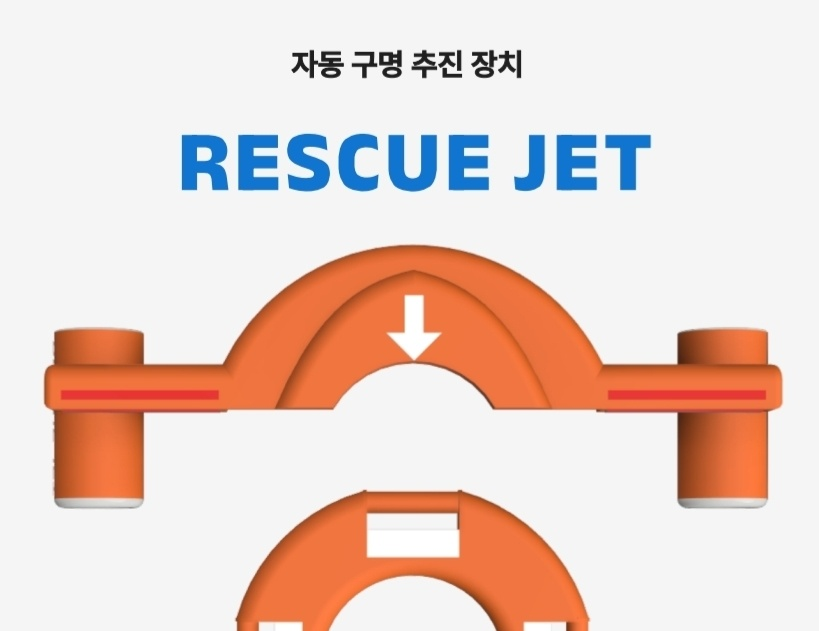
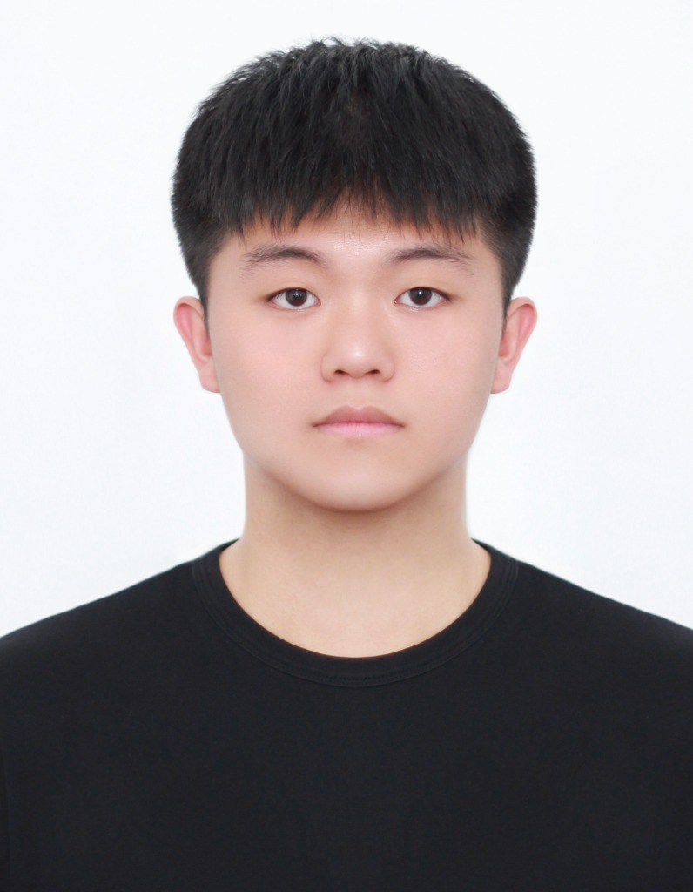
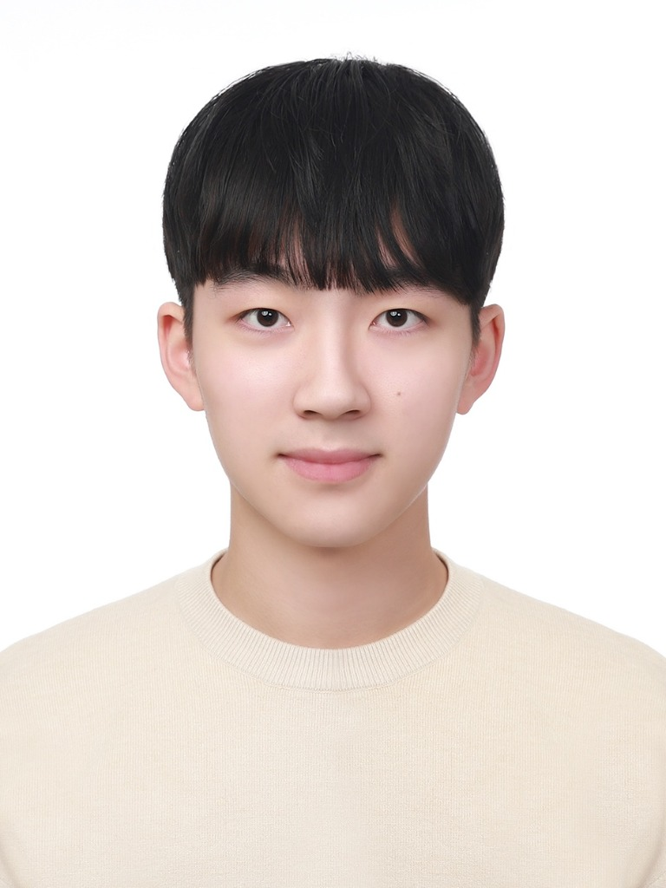

01 / GAME DEVELOPMENT
MAYHEM
이학주·HMBG 게임개발 동아리의 게임. 공개된 점수 규칙을 바탕으로 만든 별도 브라우저 실험을 체험할 수 있습니다.
제작자 프로젝트 소개순천향대학교 IT·창업 연합 동아리 / NEXTWAVE
멤버가 만든 게임과 구명 장치 설계, 그리고 2025년의 대회 기록을 공개합니다. 관심 있는 분야를 살펴보고 다음 도전을 찾아보세요.
INSIDE THE BUILD STUDIO
NextWave는 멤버의 작업을 출처와 함께 기록합니다. 아래 설계 이미지는 김한용의 RESCUE JET 프로젝트 자료입니다.

RESCUE JET / 02멤버 김한용의 구명 추진 장치 설계SELECTED PROJECTS / 02
게임의 점수 규칙을 브라우저에서 체험하고, 구명 장치의 설계 이미지와 3D 외형을 살펴보세요.
01 / GAME DEVELOPMENT
이학주·HMBG 게임개발 동아리의 게임. 공개된 점수 규칙을 바탕으로 만든 별도 브라우저 실험을 체험할 수 있습니다.
제작자 프로젝트 소개02 / HARDWARE DESIGN
멤버 김한용이 공개한 자동 구명 추진 장치 설계. 기존 3D 뷰어에서 외형을 돌려보고 분해해 볼 수 있습니다.
원본 프로젝트 보기 ↗빠르게. 더 과감하게.
플레이에 스타일을 더하다.
물리 기반 움직임과 멀티킬·스타일 점수를 결합한 게임. 공개된 점수 규칙을 작은 브라우저 실험으로 옮겼습니다.
이학주 · HMBG 게임개발 동아리 프로젝트
30초 안에 표적을 맞혀 스타일 점수를 쌓아보세요.
WASD / 방향키 이동 · 클릭 조준·발사 · Space 대시 · Enter 가까운 표적 발사
키보드 조작은 게임 화면을 선택한 뒤 사용할 수 있어요.
이 체험은 공개된 점수 규칙을 바탕으로 새로 만든 웹 실험입니다. 조작·표적·30초 제한은 체험을 위한 별도 구성으로, 원작 게임과 다릅니다.
자동 구명 추진 장치
김한용 포트폴리오에 공개된 3D 체험입니다. 직접 돌려보고, 추진 동작과 분해된 외형을 살펴보세요.
3D 체험·설계 이미지 출처 · 김한용 포트폴리오
드래그로 회전 · 방향키로도 조작할 수 있어요
이미지 기반 외형 재구성 · 추진 동작은 시각화입니다.
WAYS TO BUILD
관심 분야를 고르면 작은 실험 아이디어와 관련 공고로 이어집니다.
ACTIVITY RECORD / 2025
사이트에 공개된 여섯 건의 대회 기록을 날짜와 결과로 정리했습니다.
NEXTWAVE / PEOPLE
프로필을 눌러 각 멤버의 공개된 소개와 원본 포트폴리오를 살펴보세요.
회장 · President
사물인터넷학과 · KAKAO 엠버서더

부회장 · Vice President
사물인터넷학과 · 갤럭시 서포터즈

인사총괄 · HR Director
메타버스&게임학과 · RAMIC STUDIO 대표
JOIN NEXTWAVE
순천향대학교 재학생과 휴학생에게 열려 있습니다.
확정된 모집 일정과 지원 링크는 이곳에 공지합니다.
지원서 링크는 준비 중입니다. 공개되면 이곳에서 바로 연결됩니다.
QUESTIONS
네, 정말 괜찮아요! 잘하는 사람만 모인 곳이 아니라 함께 배우는 곳이에요. 기초부터 같이 시작하는 분들이 많고, 서로 알려주는 문화가 있어요.
물론이죠. 전공 무관하게 누구나 환영합니다. 개발 외에도 디자인·기획·마케팅 등 다양한 역할이 있어서, 자신의 강점을 살릴 수 있어요.
정기 모임을 기본으로, 프로젝트나 대회 시즌에는 팀 단위로 유연하게 모여요. 학업과 병행할 수 있도록 일정은 함께 조율합니다.
순천향대학교 캠퍼스를 중심으로 온·오프라인을 병행해요. 부원이 되면 전용 포털에서 공지·일정·소통을 한 곳에서 확인할 수 있어요.
실제로 만들어 본 포트폴리오, 대회 수상 경험, 그리고 무엇보다 함께 도전하는 동료들이요. 졸업 후에도 이어지는 네트워크가 가장 큰 자산이에요.
INTERACTIVE NOTE / NEXTWAVE
NextWave의 이름을 물의 움직임으로 표현한 웹 실험입니다. 클릭하거나 드래그해 반응을 살펴보세요.